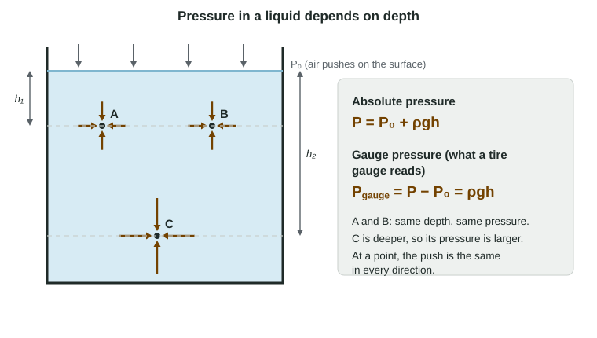

Pressure
Pressure is perpendicular force per area, a scalar in pascals; in a fluid at rest the absolute pressure is P = P₀ + ρgh, set only by depth, and the gauge pressure (what gauges read) is ρgh.
Part 1 · Hook
Why this matters
Part 2 · Before you start
What this builds on
Part 3 · Prerequisite check
Quick check before you start
1. Which is a scalar?
- Mass
- Force
- Velocity
- Displacement
Show the answer
Mass has a size but no direction.
- Correct: Mass:
- Force:
- Velocity:
- Displacement:
2. A 2.0 kg book rests on a table. Near Earth's surface (g = 9.8 N/kg), the force of the table on it is
- 19.6 N upward
- 2.0 N upward
- 19.6 N downward
- 9.8 N upward
Show the answer
Equilibrium: the normal force balances the weight, mg = 19.6 N.
- Correct: 19.6 N upward:
- 2.0 N upward:
- 19.6 N downward:
- 9.8 N upward:
3. Density is
- mass per volume
- volume per mass
- weight per area
- mass times volume
Show the answer
ρ = m/V.
- Correct: mass per volume:
- volume per mass:
- weight per area:
- mass times volume:
Part 4 · See it
See it first

Part 5 · Step by step
How it works, step by step
- Fluid particles collide with any surface they touchthey push on it, perpendicular to the surface, with a pressure P = F⊥/A
- Each layer of a fluid at rest holds up the weight of the fluid above itpressure increases with depth
- A column of height h of a fluid of density ρ has weight ρghA on area Athe pressure grows by ρgh: P = P₀ + ρgh
- A gauge reads zero in open airit measures gauge pressure, ρgh, not the absolute pressure P₀ + ρgh
Part 6 · Key ideas
Key ideas
- Pressure is perpendicular force per area, P = F⊥/A, in pascals (1 Pa = 1 N/m²). It is a scalar: the force it makes on any surface points straight into that surface.
- In a fluid at rest, P = P₀ + ρgh. Pressure depends only on depth, not on the container's shape or the amount of fluid.
- Absolute pressure P includes the atmosphere's P₀ ≈ 1.0 × 10⁵ Pa. Gauge pressure P − P₀ = ρgh is what a gauge or tire gauge reads.
- About 10 m of water adds one atmosphere of pressure.
Part 7 · Misconception
A common mistake
The wrong idea: Pressure is a force, so it points down, and more water in a container means more pressure at the bottom.
What actually happens: Pressure is force per area, a scalar. It acts equally in every direction at a point, and at the bottom of a container it depends only on the depth: P = P₀ + ρgh.
Part 8 · Check yourself
Check yourself
Exam-style questions. Anything you miss goes into your review queue.
Diagram
Three points in a tank
The water has density 1000 kg/m³. Atmospheric pressure at the surface is 1.0 × 10⁵ Pa.
1. How does the pressure at J compare with the pressure at K?
- It is the same, because J and K are at the same depth
- It is larger at J, because J is nearer the wall
- It is larger at K, because more water is above K
- It is smaller at J, because the water at J pushes sideways
Show the answer
In a fluid at rest, pressure depends only on depth: P = P₀ + ρgh. J and K are both 1.5 m down, so their pressures are equal, whatever the tank's shape.
- Correct: It is the same, because J and K are at the same depth: Right: equal depth, equal pressure.
- It is larger at J, because J is nearer the wall: Distance from a wall does not appear in P = P₀ + ρgh.
- It is larger at K, because more water is above K: The same depth of water lies above both points.
- It is smaller at J, because the water at J pushes sideways: At a point, a fluid pushes equally in every direction; that does not change the pressure from J to K.
2. What is the absolute pressure at L? Use g = 9.8 m/s². Give the value and its unit.
Type a number and its unit.
Show the answer
P = P₀ + ρgh = 1.0 × 10⁵ Pa + (1000 kg/m³)(9.8 m/s²)(4.5 m) = 1.0 × 10⁵ Pa + 4.41 × 10⁴ Pa = 1.4 × 10⁵ Pa.
- Answer: 1.4 × 105 Pa
3. What is the gauge pressure at L? Use g = 9.8 m/s². Give the value and its unit.
Type a number and its unit.
Show the answer
P_gauge = ρgh = (1000 kg/m³)(9.8 m/s²)(4.5 m) = 4.4 × 10⁴ Pa. This is what a pressure gauge, which reads zero in open air, would show.
- Answer: 4.4 × 104 Pa
4. L is 3 times as deep as J. How does the absolute pressure at L compare with that at J?
- Larger, but less than 3 times as large
- Exactly 3 times as large
- Exactly 9 times as large
- The same, because the water is incompressible
Show the answer
The gauge pressure ρgh triples (1.47 × 10⁴ Pa to 4.41 × 10⁴ Pa), but the absolute pressure also includes P₀ = 1.0 × 10⁵ Pa, which is the same at both. So P goes from 1.15 × 10⁵ Pa to 1.44 × 10⁵ Pa, a factor of about 1.3.
- Correct: Larger, but less than 3 times as large: Right: only the ρgh part triples; P₀ does not.
- Exactly 3 times as large: This would be true of the gauge pressure, not the absolute pressure.
- Exactly 9 times as large: Pressure grows linearly with depth, not with depth squared.
- The same, because the water is incompressible: Constant density is what makes P grow steadily with depth; it does not make P constant.
5. A student says, "Pressure is a force, so it has a direction." What is the best correction?
- Pressure is force per area, a scalar; its force on a surface is perpendicular to it
- Pressure is a force, but its direction is straight down, toward Earth
- Pressure has a direction: in a fluid it points toward the bottom of the container
- Pressure is the same as weight, so it points down and is measured in newtons
Show the answer
P = F⊥/A is a scalar measured in pascals (N/m²). Pressure has no direction of its own; the force it exerts on any surface is perpendicular to that surface, which is why water pushes sideways on a dam.
- Correct: Pressure is force per area, a scalar; its force on a surface is perpendicular to it: Right: scalar pressure, perpendicular force.
- Pressure is a force, but its direction is straight down, toward Earth: Water pushes sideways on walls and up on the bottom of a submerged object, so the force is not always down.
- Pressure has a direction: in a fluid it points toward the bottom of the container: At a point in a fluid, the push is the same in every direction.
- Pressure is the same as weight, so it points down and is measured in newtons: Pressure is force per area (Pa), not force (N), and not weight.
6. A tire gauge reads 2.2 × 10⁵ Pa. Atmospheric pressure is 1.0 × 10⁵ Pa. What is the absolute pressure of the air inside the tire? Give the value and its unit.
Type a number and its unit.
Show the answer
P = P₀ + P_gauge = 1.0 × 10⁵ Pa + 2.2 × 10⁵ Pa = 3.2 × 10⁵ Pa. A flat tire reads 0 on the gauge but still holds air at 1.0 × 10⁵ Pa.
- Answer: 3.2 × 105 Pa
Part 9 · Summary
Summary
Part 10 · Up next
What comes next
Part 11 · Connections